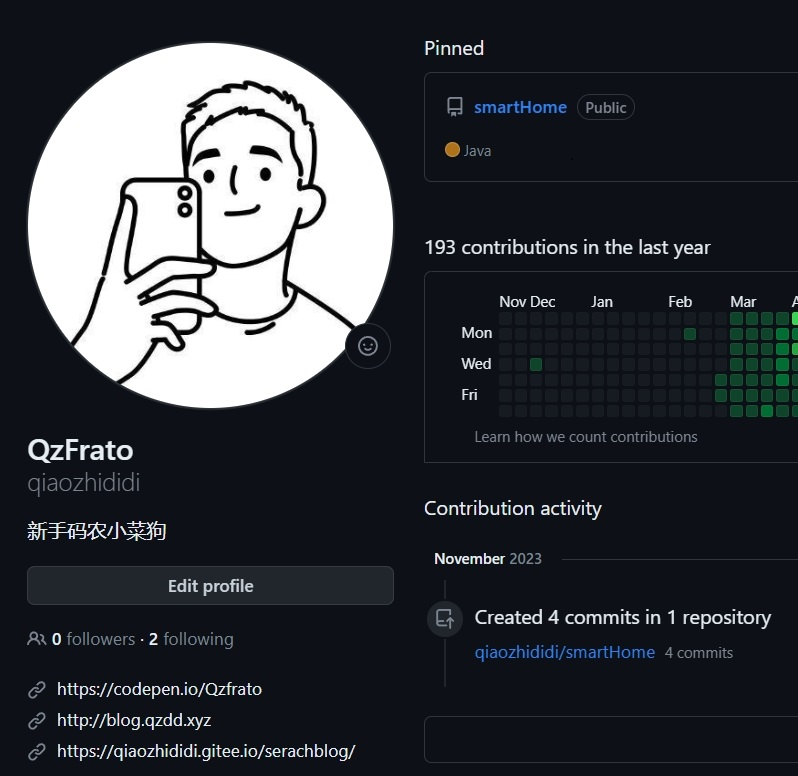
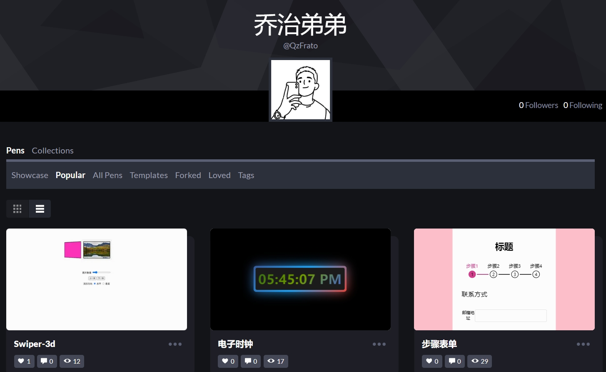

乔治弟弟 GitHub
开源代码的部分存放了一些自己学习某些技术栈的笔记以及一些在在校期间做的项目。
点击跳转

乔治弟弟 CodePen
这是我的CodePen，时不时会写了一些前端的基础小组件还有一些花里胡哨并且没什么用的东西。
点击跳转
乔治弟弟 Blog
这是一个Vercel部署的个人博客(可能需要梯子)
日常会上传一些做项目的时候遇到问题的debugger方法，还有一些自学的笔记，使用obsidian同步，目前处于测试阶段,所以笔记还没有同步到项目中去。
点击跳转
Copyright ® 2026 All Rights Reserved 乔治弟弟.